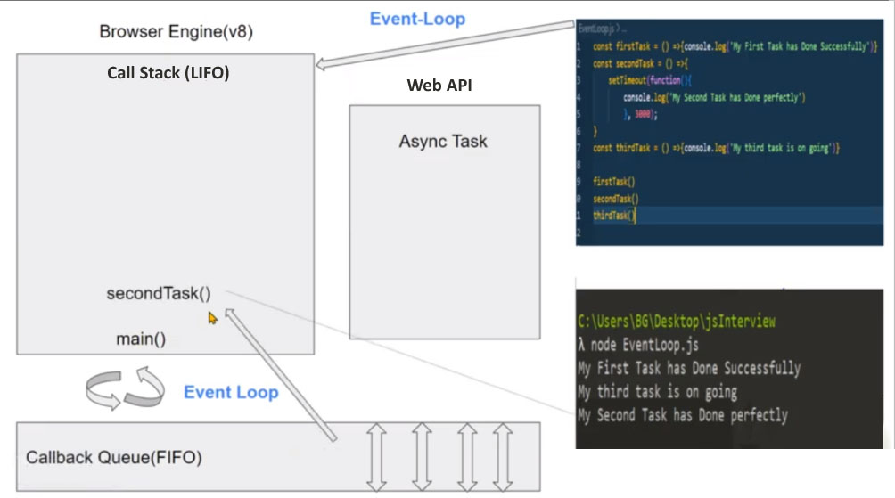

Delowar Blogs
map() : map() is an array method. It received a callback function and do something with each element of an array and eventually returns a new array. It doesn’t change the original array.
forEach() : forEach () is an iterative method of an array. It provides callback function once for each element of an array but it doesn't return anything without undefined. It also doesn’t change the original array.
Filter() : Filter() is an array method. It receives a callback function that filters each element of an array on a condition and returns a new array with the matching elements.
Find() : Find() & Filter() is like the same. It filters each element of an array on a condition and returns the first matching element.
Cookies : A Cookies is a small size of data that a server sends to the user's PC. Its highest memory capacity is 4kb & storage location are both browser and server. A programmer manually set expiration period of cookies.
Cookies are mainly used for three purposes :
1. Session management : Logins, shopping carts management
2. Personalization : User preferences & themes settings
3. Monitoring : Monitoring users behavior
Local Storage : Local Storage is a browser API. It stores string format data into a browser as key-value pairs. Its highest memory capacity is 10kb & storage location only browser. There is no expiration time for storing data into local storage.
1. localStorage.getItem()
2. localStorage.setItem()
3. localStorage.removeItem()
4. localStorage.crear()
5. localStorage.length are some Local Storage Method.
Session Storage : Session Storage is similar to Local Storage. Session storage is also a browser API. Its highest memory capacity is 5kb & storage location only browser. Whenever a document is loaded in a particular tab in the browser, a unique page session gets created and assigned to that particular tab. while data in localStorage doesn't expire, But data in sessionStorage is cleared when the page session ends.
To know event loop at 1st we have to know about working process of Java Script. JS by default single threted language that means execute js code line by line. As a result that represent blooking behabior. To prevent this problem java script use some asynchronous functions.
When a browser get js code, at first run an engine named v8 or others. There are two things have into an engine. 1. Heap and 2.Call stack. When start execution a main function by default run into call stack. Then each function call into callstack & after execution the function removed. When the callstack get an asynchronous function, immediately transfer to web API which is a part of browser environment. After processing the function web API sent into a callback queue.
This process will be continue, and a time all function will be execute & remove from the callstack. When callstack will blank & callback queue have processed asynchronous function, then each function sent to callstack one after one and execute. A media is used to sent processed function from callback queue to callstack is called Event Loop.
quizTimer: quizTimer function received a parameter dismiss, If true then the Timer will be stoped by clearInterval(timer) & return. otherwise intered into setInterval() function, and after every 1 second count value will increases. Then convert into minutes using (count/60). (mod=count % 60) means when (count>60) then start from 1. If count>60, then timer give a signal time is up with color red-700 & red-300 as like light On & Off.